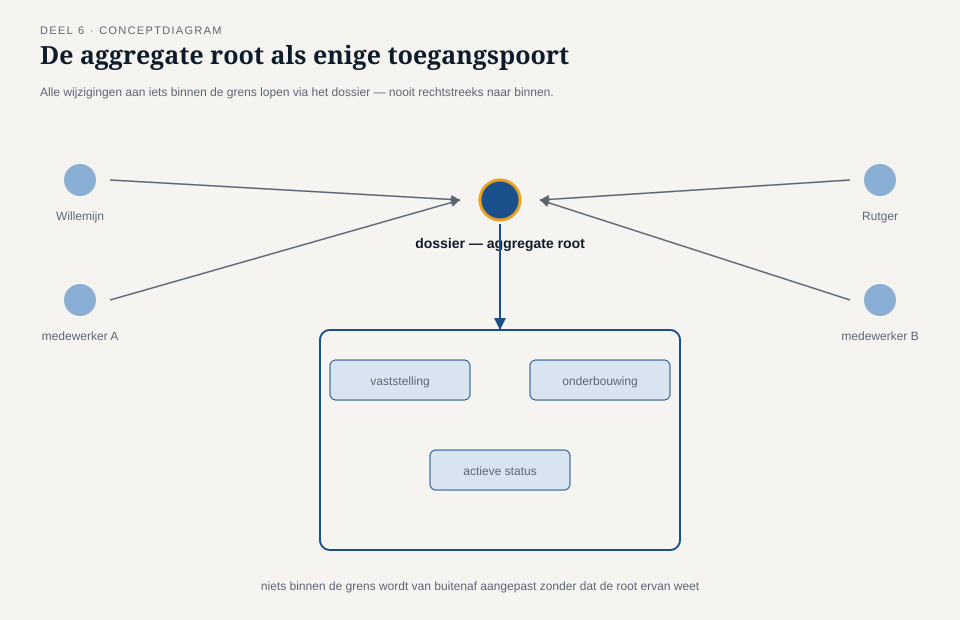
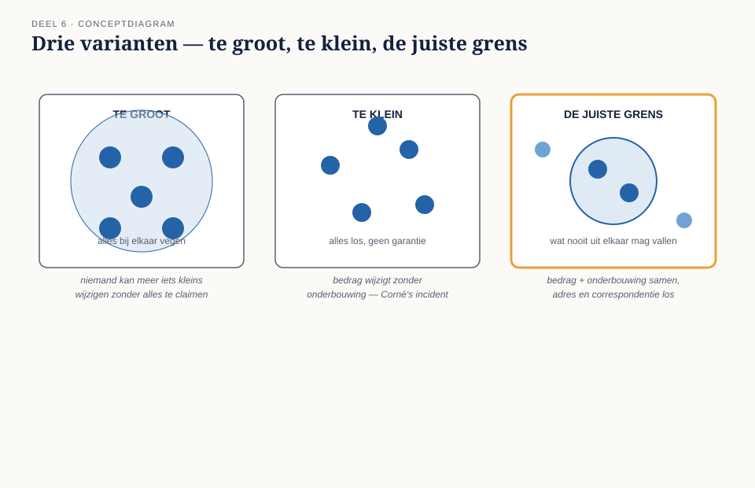
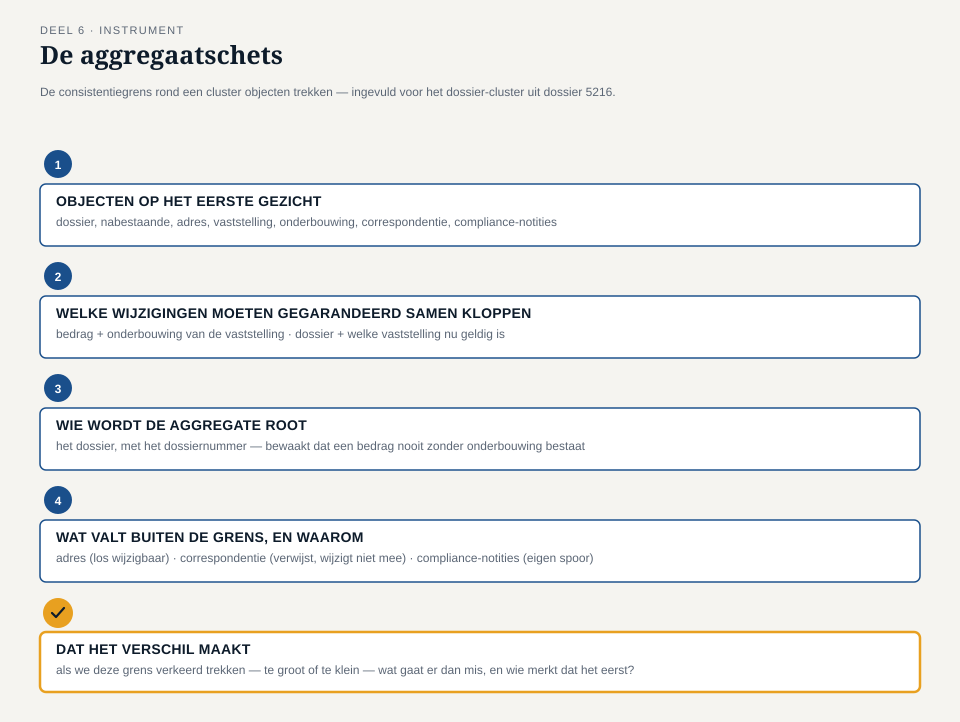

Deel 6 — Aggregate: de consistentiegrens
Reader · Ductus-cursus Domain-Driven Design · niveau 1 (fundament) · deel 6 van 30
6.1 Waar dit deel over gaat
Deel 5 heeft het team twee soorten objecten opgeleverd: entity’s met een eigen identiteit (de nabestaande, de partnervaststelling) en value objects die volledig door hun inhoud worden bepaald (het adres, het bedrag). Tijmen sloot af met een vraag die nog geen antwoord had: als de vaststelling wijzigt, moet dan ook automatisch het dossier worden bijgewerkt? En wat gebeurt er als twee mensen tegelijk aan hetzelfde dossier werken? Dit deel geeft daar een antwoord op, met de derde tactische bouwsteen: het aggregate.
Aan het eind van dit deel kun je:
- in eigen woorden uitleggen wat een aggregate is en waarom het draait om consistentie, niet om structuur;
- voor een cluster objecten bepalen welke wijzigingen altijd in één keer moeten kloppen, en welke niet;
- de rol van de aggregate root benoemen en uitleggen waarom niet elke entity die rol kan vervullen;
- met de aggregaatschets een consistentiegrens rond een cluster objecten trekken en verdedigen.
6.2 De casus: twee medewerkers, één dossier
Uit het casusdossier: het team heeft de nabestaande, het adres en de partnervaststelling ingedeeld als entity of value object. Tijmens vraag over gelijktijdige wijzigingen ligt nog open.
Corné Pauwels vertelt tijdens de sessie een incident uit de oude situatie, niet uit dossier 5216 zelf maar uit iets vergelijkbaars dat hem al langer dwarszit. Twee medewerkers van Nabestaandenzaken werkten, zonder van elkaar te weten, tegelijk aan hetzelfde dossier: de een verwerkte een adreswijziging die net via de post was binnengekomen, de ander verwerkte op hetzelfde moment de uitkomst van een compliance-check van Saïda die het bedrag van de vaststelling bijstelde. Beide wijzigingen werden apart opgeslagen. Het resultaat: het dossier kreeg een nieuw adres, mét het oude bedrag, omdat de tweede wijziging de eerste per ongeluk overschreef in plaats van ernaast te bestaan.
“Niemand deed iets fout,” zegt Corné. “Ze werkten allebei gewoon hun eigen taak af. Maar het dossier klopte er niet meer bij.”
Willemijn herkent het direct. “Dat gebeurt vaker dan je zou willen. En het ergste is: soms merk je het pas als een nabestaande belt en zegt dat het bedrag niet klopt met wat er in de brief stond.”
Daan denkt hardop na. “In deel 5 hebben we de vaststelling en het dossier allebei als entity aangewezen. Als dat twee losse dingen zijn die allebei apart worden opgeslagen en apart worden gewijzigd, dan kan precies dit gebeuren — twee wijzigingen die elkaar niet zien.”
“Dus moeten we ze samenvoegen tot één ding?” vraagt Rutger.
“Niet alles,” zegt Tijmen. “Als we van elk dossier en alles wat erbij hoort — de vaststelling, de correspondentie, de compliance-notities van Saïda — één groot, onwrikbaar geheel maken dat je alleen als geheel kunt wijzigen, dan kan straks niemand meer iets aanpassen zonder het hele dossier te claimen. Dat lost het ene probleem op en maakt een nieuw probleem.”
Saïda, die weer is aangeschoven, stelt de vraag die het hart van dit deel wordt: “De vraag is niet ‘wat hoort er allemaal bij het dossier’. De vraag is: welke dingen moeten, op het moment dat er iets verandert, altíjd tegelijk kloppen — en welke dingen mogen best een paar seconden, of een paar uur, uit de pas lopen zonder dat het een probleem is?”
Ze geeft zelf een voorbeeld. “Het bedrag van de vaststelling en de reden waarom het is vastgesteld — die twee moeten nooit los van elkaar bestaan. Een bedrag zonder onderbouwing is voor mij, achteraf, waardeloos. Maar het adres van de nabestaande en het bedrag van de uitkering? Die hebben strikt genomen niets met elkaar te maken. Ze mogen allebei op hetzelfde moment veranderen zonder dat de een op de ander hoeft te wachten.”
6.3 Wat een aggregate is
Een aggregate is een cluster van entity’s en value objects die het domein als één geheel behandelt wanneer het om consistentie gaat: alles binnen die grens verandert samen, in één keer, of helemaal niet. Het aggregate is geen technisch groeperingsmechanisme en geen willekeurige verzameling “dingen die logisch bij elkaar horen” — het is een bewuste keuze over welke wijzigingen altijd tegelijk moeten kloppen.
De reden dat dit een eigen bouwsteen verdient, ligt precies in het incident dat Corné vertelt. Zodra twee stukjes informatie apart worden opgeslagen en apart worden gewijzigd, ontstaat het risico dat ze op enig moment niet meer bij elkaar passen — de ene wijziging is al verwerkt, de andere nog niet, en tussen die twee momenten in is het dossier, voor wie er op dat moment naar kijkt, incorrect. Een aggregate is de grens waarbinnen het domein zegt: dit risico accepteren we hier niet. Alles binnen deze grens wordt in één keer bijgewerkt, of niet.

De aggregate root
Een aggregate heeft altijd precies één entity die als toegangspoort fungeert: de aggregate root. Alle wijzigingen aan iets binnen de grens lopen via deze root — niets binnen de grens wordt rechtstreeks van buitenaf aangepast, zonder dat de root ervan weet. Dat is niet een technische beperking die achteraf is opgelegd, maar precies het mechanisme dat de consistentiegarantie waarmaakt: als alle wijzigingen via één poort lopen, kan die poort controleren of de wijziging het geheel niet in een ongeldige toestand brengt, vóórdat de wijziging wordt doorgevoerd.
Niet elke entity binnen een aggregate kan de root zijn. De root is de entity die de identiteit van het hele cluster naar de buitenwereld vertegenwoordigt, en die de regels bewaakt die over het geheel gaan. Bij het Nabestaandenloket ligt het voor de hand dat het dossier zelf die rol vervult: het dossier heeft het dossiernummer waarmee Willemijn, Saïda en de rest van de organisatie ernaar verwijzen, en het dossier is het niveau waarop de regel geldt die Saïda benoemt — een bedrag zonder onderbouwing mag nooit bestaan.
Objecten binnen de grens die geen root zijn — zoals de onderbouwing bij een vaststelling — zijn voor de buitenwereld niet los benaderbaar. Wie het bedrag van een vaststelling wil wijzigen, doet dat via het dossier, niet door rechtstreeks bij de vaststelling naar binnen te grijpen. Zo kan het dossier, als root, garanderen dat een bedrag nooit zonder onderbouwing verandert.

Waar de grens wél en niet loopt
De vraag die Saïda stelt — “welke dingen moeten altijd tegelijk kloppen, en welke mogen uit de pas lopen” — is de enige vraag die er werkelijk toe doet bij het trekken van een aggregaatgrens. Twee veelvoorkomende denkfouten liggen op de loer, allebei het spiegelbeeld van elkaar.
Te groot: alles bij elkaar vegen wat “erbij hoort”. Het dossier, de vaststelling, alle correspondentie, alle compliance-notities, het adres, het telefoonnummer — dat voelt allemaal alsof het “bij hetzelfde dossier hoort”, en dus, zo redeneert de denkfout, in dezelfde aggregate thuishoort. Het gevolg is precies wat Tijmen benoemt: niemand kan meer iets kleins wijzigen zonder het hele, opgeblazen geheel te claimen. Twee medewerkers die allebei iets anders aan hetzelfde dossier willen doen — de een een adreswijziging, de ander een compliance-notitie toevoegen — moeten dan op elkaar wachten, ook al hebben hun wijzigingen helemaal niets met elkaar te maken. Dat is een oplossing die een probleem (verlies van consistentie) vervangt door een ander probleem (verlies van bruikbaarheid).
Te klein: alles los van elkaar laten, zonder enige garantie. Dit is precies het incident van Corné: de vaststelling en haar onderbouwing worden als twee volledig losse dingen behandeld, en niemand bewaakt dat ze bij elkaar blijven passen. Het gevolg: een bedrag dat verandert zonder dat de onderbouwing meeverandert, of omgekeerd — precies de situatie die Saïda niet kan verdedigen bij een bezwaar.
De juiste grens ligt ertussenin, en wordt niet bepaald door “wat hoort logisch bij elkaar” maar door de vraag die Saïda stelt: welke wijziging moet, om geldig te zijn, een andere wijziging gegarandeerd meenemen? Het bedrag van een vaststelling zonder de reden waarom het zo is vastgesteld, is voor Saïda per definitie ongeldig — die twee horen dus binnen dezelfde grens. Het adres van de nabestaande en het bedrag van de vaststelling hebben geen enkele zo’n afhankelijkheid — die mogen apart wijzigen.

Waarom kleine aggregates de voorkeur verdienen
Een vuistregel die uit deze afweging volgt: kies, bij twijfel, de kleinere aggregate. Een grote aggregate lijkt veiliger — meer dingen die gegarandeerd samen kloppen — maar iedere entity die je toevoegt aan een aggregate is een entity die niet meer onafhankelijk kan worden gewijzigd. Bij een klein team met veel gelijktijdig werk, zoals Nabestaandenzaken, is dat een reële kostenpost: elke onnodig grote aggregate is een plek waar twee medewerkers straks op elkaar moeten wachten voor wijzigingen die niets met elkaar te maken hebben. Alleen wat werkelijk, inhoudelijk, in één keer moet kloppen, hoort binnen de grens.
6.4 De werkvorm: de aggregaatschets
Het instrument van dit deel is de aggregaatschets: een sjabloon waarmee je, voor een cluster objecten uit het domein, bepaalt waar de consistentiegrens loopt, wie de root is, en wat er buiten de grens valt.
Het invulblad
Voor een gekozen cluster objecten doorloop je vier vragen.
Welke objecten horen, op het eerste gezicht, bij elkaar? Begin breed: som alle entity’s en value objects op die met het cluster te maken hebben, zonder nog te selecteren.
Welke van deze wijzigingen moeten, om geldig te zijn, gegarandeerd samen kloppen? Ga elk paar objecten langs met de vraag van Saïda: als het ene object wijzigt zonder dat het andere meewijzigt, ontstaat er dan een situatie die het domein als ongeldig zou beschouwen? Zo ja, horen beide objecten binnen dezelfde grens. Zo nee, mogen ze onafhankelijk van elkaar wijzigen.
Wie wordt de aggregate root? Wijs de ene entity aan die de identiteit van het geheel naar buiten vertegenwoordigt en de regels over het geheel bewaakt. Onderbouw waarom juist deze entity die rol krijgt, en niet een andere entity binnen de grens.
Wat valt buiten de grens, en waarom mag dat? Benoem expliciet de objecten die je hebt overwogen maar buiten de grens hebt gelaten, met de reden: welke twee wijzigingen mogen hier onafhankelijk van elkaar plaatsvinden, zonder dat het domein daar last van heeft?
Het veld dat het verschil maakt
Onder deze vier vragen staat het afsluitende veld:
Dat het verschil maakt: als we deze grens verkeerd trekken — te groot of te klein — wat gaat er dan mis, en wie merkt dat als eerste?
Zoals bij de eerdere instrumenten gaat dit veld niet over het benoemen van de grens zelf, maar over de concrete consequentie van een verkeerde keuze. “Het dossier is de aggregate” is een constatering; “als we de correspondentie binnen dezelfde aggregate als het dossier plaatsen, kunnen Willemijn en een collega niet meer tegelijk aan hetzelfde dossier werken als de een een brief verstuurt en de ander een adreswijziging verwerkt — Willemijn is degene die dat als eerste merkt, op het moment dat haar wijziging wordt geweigerd omdat een collega net iets anders aan hetzelfde dossier deed” is een inzicht dat de grens verdedigbaar maakt.

6.5 Terug naar de casus
Het team past de aggregaatschets toe op het cluster rond dossier 5216.
Objecten op het eerste gezicht: het dossier, de nabestaande, het adres, de partnervaststelling, de onderbouwing bij de vaststelling, de correspondentie (brieven), Saïda’s compliance-notities.
Welke wijzigingen moeten gegarandeerd samen kloppen? Het team loopt de paren langs. Bedrag en onderbouwing van de vaststelling: gegarandeerd samen, precies zoals Saïda eerder al zei — een bedrag zonder onderbouwing is ongeldig. Het dossier en de vraag welke vaststelling op dit moment de geldige is: ook gegarandeerd samen — een dossier met twee tegelijk “actieve” vaststellingen zou een intern tegenstrijdige toestand zijn. Het adres en het bedrag: geen enkele afhankelijkheid, zoals Saïda in de sessie al aangaf. De correspondentie en het dossier: hier ontstaat discussie. Willemijn brengt in dat een verstuurde brief nooit los mag staan van de vaststelling waarover hij gaat — als de brief een bedrag noemt, moet dat bedrag overeenkomen met de op dat moment geldende vaststelling. Maar het versturen van een brief zelf hoeft niet te wachten op, of te blokkeren met, een adreswijziging die tegelijk plaatsvindt. Het team besluit: de correspondentie wordt niet in dezelfde aggregate ondergebracht als het dossier, maar verwijst naar een vaststelling op het moment van versturen — als die vaststelling later wijzigt, blijft de oude brief een geldig historisch feit over wat er tóen is gecommuniceerd, in plaats van dat de brief “meeverandert” met een latere wijziging.
Wie wordt de root? Het dossier, met als identificerend kenmerk het dossiernummer. Het dossier bewaakt de regel dat er nooit twee tegelijk geldige vaststellingen mogen bestaan, en dat een vaststelling nooit zonder onderbouwing kan bestaan. De nabestaande zelf wordt overwogen als root — ze heeft immers ook een eigen identiteit — maar het team verwerpt dat: een nabestaande kan, in theorie, bij meer dan één dossier betrokken zijn (bijvoorbeeld als er meerdere overleden partners in het spel zijn geweest, hoe zeldzaam ook), terwijl het dossier zelf altijd één, ondubbelzinnige consistentiegrens vertegenwoordigt.
Wat valt buiten de grens? Het adres (los wijzigbaar, zoals in deel 5 al vastgesteld als value object gekoppeld aan de nabestaande, niet aan het dossier zelf), de correspondentie (verwijst naar het dossier maar wordt niet via het dossier als geheel gewijzigd), en Saïda’s compliance-notities, die als eigen, onafhankelijk spoor blijven bestaan omdat Saïda haar eigen vaststellingen wil kunnen documenteren zonder op de rest van het team te hoeven wachten — en omgekeerd, zodat het team niet op Saïda hoeft te wachten voor iedere andere wijziging.
Bij het afsluitende veld schrijft Corné: “Als we de correspondentie binnen dezelfde aggregate als het dossier hadden gestopt, was precies mijn incident opnieuw mogelijk geweest, maar dan andersom: een medewerker die een brief wil versturen, moet dan wachten tot een collega klaar is met een adreswijziging aan hetzelfde dossier, ook al hebben die twee dingen niets met elkaar te maken. Willemijn is dan degene die als eerste tegen die wachttijd aanloopt.”
Rutger, die de sessie begon met “moeten we ze dan samenvoegen tot één ding?”, formuleert de conclusie die voor hem het scherpst blijft hangen: “Ik dacht dat het aggregate ging over wat bij elkaar hoort. Het gaat over wat nooit uit elkaar mag vallen. Dat zijn twee heel verschillende vragen, en de tweede is veel kleiner dan de eerste.”
Tijmen sluit af met een blik vooruit: “We hebben nu vastgesteld dat een bedrag nooit zonder onderbouwing mag ontstaan. Maar we hebben nog niet vastgelegd wat er precies is gebeurd — dat een vaststelling is gedaan, met dat bedrag, op die datum, om die reden — als een onveranderlijk feit dat we later kunnen naslaan. Op dit moment overschrijven we in gedachten nog steeds statusvelden. Saïda’s vraag van een paar weken terug — kun je mij over een jaar nog uitleggen waarom dit dossier zo is afgehandeld — is daarmee nog niet beantwoord.”
Vooruit naar deel 7. Dat is de vraag van het volgende deel: hoe leg je vast wát er is gebeurd, op een manier die nooit meer wordt overschreven? Het Nabestaandenloket-team maakt kennis met de vierde tactische bouwsteen: het domain event.